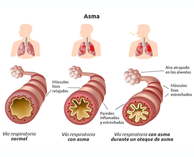

Es una enfermedad crónica que provoca que las vías respiratorias de los pulmones se hinchen y se estrechen. Esto hace que se presente dificultad para respirar como sibilancias, falta de aliento, opresión en el pecho y tos.


Todo lo que debes saber sobre el asma
Es una enfermedad crónica que provoca que las vías respiratorias de los pulmones se hinchen y se estrechen. Esto hace que se presente dificultad para respirar como sibilancias, falta de aliento, opresión en el pecho y tos.
El asma es causada por hinchazón (inflamación) de las vías respiratorias. Cuando se presenta un ataque de asma, el recubrimiento de las vías respiratorias se inflama y los músculos que las rodean se tensionan. Esto reduce la cantidad de aire que puede pasar por estas.
Los desencadenantes comunes del asma incluyen:
Los síntomas de asma varían de una persona a otra. Por ejemplo, usted puede tener síntomas todo el tiempo o mayormente durante la actividad física.
La mayoría de las personas con asma tienen ataques separados por períodos sin síntomas. Algunas personas tienen dificultad prolongada para respirar con episodios de aumento de la falta de aliento. Las sibilancias o una tos pueden ser el síntoma principal.
Los síntomas del asma incluyen:
El proveedor de atención médica utilizará un estetoscopio para auscultar sus pulmones. Se pueden escuchar sibilancias u otros sonidos relacionados con el asma. El proveedor tomará su historial médico y preguntará acerca de sus síntomas.
Los exámenes que se pueden ordenar incluyen:
Los objetivos del tratamiento son: